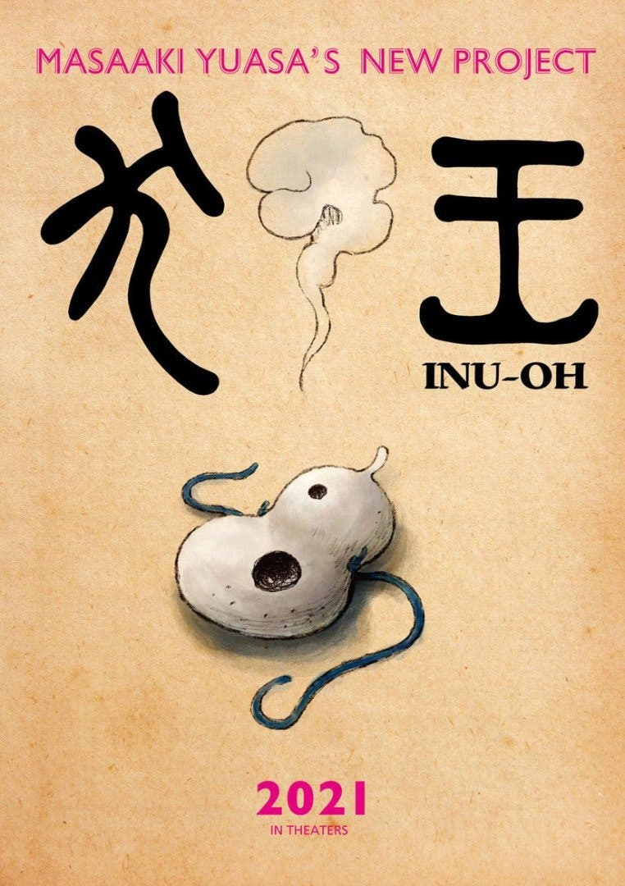

Anime Ino - Oh
|  |
Sipnosis"Inu-Oh fue una figura de la vida real, un intérprete y dramaturgo de Sarugaku Noh, persona muy popular en el siglo XIV. Sin embargo, hoy en día es casi desconocido para la gente, debido a que apenas han sobrevivido muy docuumentos sobre su vida. Ahora, unos 600 años más tarde, este proyecto Inu-Oh retrata las historias de hermandad entre el legendario Inu-Oh, que desapareció de la historia, y un cierto jugador de Biwa, en una adaptación repleta de secuencias de música y danza."
|
|---|